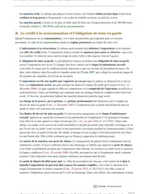

L'arrêt du 7 février 1986 sur l'action directe contre le fabricant, expliqué simplement
Le 7 février 1986 (pourvoi n° 83-14.631), l'Assemblée plénière de la Cour de cassation juge que le maître de l'ouvrage, comme le sous-acquéreur, jouit de tous les droits et actions attachés à la chose qui appartenait à son auteur. Il peut donc agir directement contre le fabricant des briques par une action contractuelle, même s'il n'a signé aucun contrat avec lui.

Le principe posé en une phrase
Le 7 février 1986, l'Assemblée plénière de la Cour de cassation, qui est la formation la plus solennelle de cette juridiction, rend deux arrêts sur la même difficulté. Un propriétaire subit un dommage à cause du matériau d'un fabricant, et il n'a signé aucun contrat avec ce fabricant.
La Cour reconnaît au propriétaire une action contre le fabricant et précise la nature de cette action. Le maître de l'ouvrage, c'est-à-dire la personne pour qui l'on construit et qui paie les travaux, est traité comme un sous-acquéreur, c'est-à-dire un acheteur qui tient la chose d'un premier acheteur, sans l'avoir reçue du vendeur d'origine. Il reçoit avec la chose tous les droits qui y sont attachés. Il agit donc contre le fabricant par une action contractuelle directe, fondée sur la non-conformité de la chose livrée.
Les deux décisions emploient en effet la même formule. L'une concerne des briques (pourvoi n° 83-14.631, le pourvoi étant le recours formé devant la Cour de cassation), l'autre un produit d'isolation de canalisations (pourvoi n° 84-15.189). La Cour de cassation cite elle-même la première, celle des briques, en 2024 pour rappeler la règle.
L'action est contractuelle alors que le demandeur n'a signé aucun contrat avec le fabricant. Le fabricant peut donc lui opposer ce qu'il aurait opposé à son propre acheteur, par exemple une clause qui limite sa garantie à l'échange de la pièce défectueuse, comme l'a jugé la première chambre civile de la Cour de cassation le 7 juin 1995. La solution s'applique quand une chose passe de main en main. Pour le sous-traitant, à qui l'entrepreneur confie une partie du chantier et qui fournit seulement un travail, l'Assemblée plénière a jugé le 12 juillet 1991, dans l'arrêt Besse, que l'action reste délictuelle, c'est-à-dire sans contrat entre le demandeur et le défendeur.

Fiche complète
Contrats spéciaux L3
Les faits, des cloisons fissurées à Asnières
Une société civile immobilière, la SCI Asnières Normandie, fait construire un ensemble immobilier à Asnières, dans les Hauts-de-Seine. Elle est donc le maître de l'ouvrage, et elle confie le chantier à un entrepreneur, la société E.S.C.A. Cette société est en liquidation des biens au moment du pourvoi, c'est-à-dire en faillite, et ses biens sont vendus pour payer ses dettes. Pour monter les cloisons, cet entrepreneur utilise des briques que fabrique la Société de Produits Céramiques de l'Anjou, que la décision nomme « P.C.A. ».
Des fissures apparaissent ensuite dans les cloisons. La cour d'appel retient que les briques ont été mal fabriquées et qu'elles ne sont pas conformes au contrat. Le fabricant soutient au contraire que les fissures viennent surtout d'une erreur de l'entrepreneur, qui aurait monté les cloisons sans la semelle souple destinée à absorber les mouvements du bâtiment.
Les liens juridiques de cette affaire forment une chaîne. Le fabricant a vendu les briques à l'entrepreneur, et l'entrepreneur a conclu avec la SCI un contrat d'entreprise, c'est-à-dire un contrat par lequel il s'engage à réaliser un ouvrage. Entre le fabricant et la SCI, il n'existe aucun contrat.
Prenons un exemple plus courant. Tu achètes un appartement neuf dont le carrelage se décolle, parce que les carreaux étaient mal cuits à l'usine. Or tu n'as jamais rien signé avec l'usine. La question de cet arrêt est donc celle du terrain juridique sur lequel tu peux l'attaquer.
La procédure et le pourvoi
Le syndicat des copropriétaires de la résidence, qui représente les propriétaires des logements, agit notamment contre le fabricant. Le 5 mai 1983, la cour d'appel de Paris déclare le fabricant responsable pour partie des fissures. Elle le condamne à payer au syndicat des copropriétaires une partie du coût des réparations.
Selon le fabricant, la cour d'appel lui a appliqué la présomption qui s'applique au vendeur professionnel, réputé connaître les défauts de ce qu'il vend. Le fabricant forme alors un pourvoi en cassation. Ce pourvoi repose sur un moyen unique, c'est-à-dire un seul argument de droit, mais cet argument se décompose en cinq branches, qui sont autant de points d'attaque. Il soutient d'abord que sa faute devait s'apprécier au regard des stipulations contractuelles imposées par l'entrepreneur, que la cour d'appel avait pourtant jugées indifférentes. La cour d'appel aurait ensuite statué sur le terrain de la responsabilité quasi-délictuelle, c'est-à-dire hors contrat, alors qu'elle devait rechercher si le fabricant connaissait la destination des briques, au lieu de retenir contre lui une présomption. Les normes qu'elle a appliquées seraient de plus postérieures à la livraison des briques. Enfin, les fissures viendraient de l'erreur de l'entrepreneur, et le lien de causalité entre les briques et les fissures ne serait pas établi.
Le 4 décembre 1985, la première présidente de la Cour de cassation renvoie l'affaire devant l'Assemblée plénière. Ce renvoi montre que la question dépasse ce seul dossier.
Le problème de droit
Le maître de l'ouvrage qui n'a signé aucun contrat avec le fabricant d'un matériau peut-il l'attaquer sur le terrain du contrat, ou doit-il se limiter à la responsabilité délictuelle ?
En effet, le choix du terrain change ce que le demandeur doit prouver. Sur le terrain contractuel, il suffit de montrer que la chose livrée n'est pas conforme à ce qui était prévu. À l'inverse, sur le terrain délictuel, qui s'applique hors contrat (article 1382 à l'époque, article 1240 aujourd'hui), la victime doit prouver une faute, un dommage et un lien de causalité entre les deux.
Que dit l'arrêt du 7 février 1986 ?
La Cour rejette le pourvoi. Elle juge que le maître de l'ouvrage, comme le sous-acquéreur, dispose contre le fabricant d'une action contractuelle directe, fondée sur la non-conformité de la chose livrée.
La formule de l'Assemblée plénière
« […] le maître de l'ouvrage comme le sous-acquéreur, jouit de tous les droits et actions attachés à la chose qui appartenait à son auteur ; qu'il dispose donc à cet effet contre le fabricant d'une action contractuelle directe fondée sur la non-conformité de la chose livrée […]. »Cass., Ass. plén., 7 février 1986, n° 83-14.631
Le raisonnement se déroule en trois temps. D'abord, la Cour pose le principe, selon lequel le propriétaire reçoit les droits attachés à la chose. Ensuite, elle en tire la conséquence, à savoir une action contractuelle directe contre le fabricant. Enfin, elle l'applique au litige. La cour d'appel avait relevé que le fabricant avait livré des briques non conformes au contrat, à cause de leur mauvaise fabrication. La Cour de cassation y voit un manquement contractuel, dont la SCI pouvait demander réparation « dans le délai de droit commun ».
La Cour ajoute que ce seul motif justifie la décision, si bien qu'aucune des cinq branches du moyen ne peut être accueillie. Elle approuve donc la cour d'appel et relit simplement ses constatations (des briques non conformes) sous l'angle du contrat, ce qui suffit à rejeter le pourvoi.
La non-conformité désigne le fait que la chose livrée ne correspond pas à ce que le contrat prévoyait. Quant au délai de droit commun, il était à l'époque de trente ans (ancien article 2262 du Code civil), mais la réforme de la prescription du 17 juin 2008 l'a ramené à cinq ans (article 2224).
L'arrêt repose entièrement sur l'idée que le propriétaire reçoit les droits attachés à la chose, sans viser aucun article de loi.
L'arrêt jumeau du même jour (pourvoi n° 84-15.189) confirme cette lecture. Une société civile immobilière avait fait construire un ensemble immobilier, puis des fuites d'eau étaient apparues dans les canalisations. L'entreprise chargée du gros œuvre, c'est-à-dire de la structure du bâtiment, avait sous-traité l'ouverture des tranchées à la société Samy. La société Samy avait appliqué sur les canalisations un produit d'isolation, le Protexulate, que la société MPI fabriquait et lui avait vendu. Les experts avaient conclu à une corrosion due à ce produit. Un mauvais rebouchage des tranchées, c'est-à-dire leur remplissage de terre après la pose, l'avait aggravée. La cour d'appel avait pourtant retenu le Protexulate comme seule origine des désordres, c'est-à-dire des dégâts. C'est pourquoi l'assureur de la SCI, qui avait indemnisé les copropriétaires, agissait contre le fabricant.
Dans cette seconde affaire, le fabricant soutenait que seule l'action en garantie des vices cachés (la garantie que doit le vendeur quand la chose a un défaut qu'on ne pouvait pas voir à l'achat) était possible, et qu'elle devait être exercée dans le « bref délai » de l'ancien article 1648, c'est-à-dire le court délai imposé à l'acheteur pour agir après la découverte du vice, ce qui rendait selon lui l'action trop tardive. La Cour répond donc par la même formule. L'action est contractuelle, fondée sur la non-conformité, et elle suit ainsi le délai de droit commun.
Les chaînes de contrats tombent souvent en partiel
Mon guide gratuit « Réviser le droit sans s'épuiser » t'aide à répartir tes révisions de contrats spéciaux sur tout le semestre. Tu le reçois par email, avec les méthodes que mes élèves appliquent pour retenir les grands arrêts jusqu'au jour de l'examen.
Pourquoi l'action du propriétaire est-elle contractuelle ?
L'action est contractuelle parce que la Cour traite le droit d'agir contre le fabricant comme un accessoire de la chose, c'est-à-dire comme un élément qui accompagne la chose. Ce droit passe donc à chaque nouveau propriétaire avec la chose. Le propriétaire reçoit ainsi un droit qui existait déjà, sans signer de nouveau contrat avec le fabricant.
Cette idée permet d'échapper au principe de l'effet relatif des contrats, que rappelle l'article 1199 du Code civil, selon lequel le contrat ne crée d'obligations qu'entre les parties. Ce principe interdit à un tiers de demander l'exécution d'un contrat qu'il n'a pas signé. Ce tiers doit pourtant respecter l'existence de ce contrat, ce que les juristes appellent l'opposabilité du contrat. Ici, le propriétaire fait valoir un droit qui lui a été transmis avec la chose.
Prenons un fabricant A qui vend une machine à un revendeur B, lequel la vend ensuite à un particulier C. Quand B vend la machine à C, il lui transmet la chose, mais aussi les droits que B possédait contre A, son propre vendeur. Un téléphone encore sous garantie qu'on revend garde d'ailleurs sa garantie, selon la même logique. L'article 1615 du Code civil dit que l'obligation de délivrer la chose comprend ses accessoires. Le raisonnement de l'arrêt suit la même idée que cet article 1615.
La nouveauté de 1986 tient à l'application de cette idée au maître de l'ouvrage. Le maître de l'ouvrage a conclu un contrat d'entreprise avec l'entrepreneur, au lieu d'acheter lui-même les briques. Pourtant, les briques sont passées du fabricant à l'entrepreneur, puis dans l'immeuble de la SCI. La Cour l'assimile donc à un sous-acquéreur.
En pratique, le propriétaire peut agir sans prouver la faute du fabricant, car il lui suffit de montrer que la chose n'était pas conforme. De plus, l'entrepreneur est parfois en liquidation, comme ici. L'action directe permet alors de s'adresser à celui qui a fabriqué la chose.
La portée, une action qui suit la chose de 1979 à 2024
Le 9 octobre 1979, la première chambre civile avait déjà jugé, dans l'arrêt Lamborghini (pourvoi n° 78-12.502), que l'action directe du sous-acquéreur contre le fabricant ou un vendeur intermédiaire, pour un vice caché, est « nécessairement de nature contractuelle ». L'affaire concernait une Lamborghini d'occasion, dont une pièce de la suspension arrière s'était rompue dix jours après l'achat. La chaîne ne comprenait que des ventes successives, ce qui la rend homogène.
L'arrêt de 1986 étend cette solution à une chaîne hétérogène, qui mêle une vente (du fabricant à l'entrepreneur) et un contrat d'entreprise (de l'entrepreneur au propriétaire). Il confirme ainsi que le propriétaire n'a pas besoin d'avoir acheté lui-même la chose.
Le 12 juillet 1991, l'Assemblée plénière pose une limite dans l'arrêt Besse (pourvoi n° 90-13.602). Un propriétaire avait fait construire un immeuble d'habitation, et la plomberie réalisée par un sous-traitant s'était révélée défectueuse. Il agissait contre l'entrepreneur et le sous-traitant plus de dix ans après la réception de l'immeuble, c'est-à-dire le moment où il avait accepté l'ouvrage terminé. La cour d'appel s'appuyait sur des arrêts de 1988 de la Cour de cassation, notamment de la première chambre civile, qui admettaient une action contractuelle dans un groupe de contrats. Elle avait donc traité l'action contre le sous-traitant comme contractuelle, et lui avait opposé la forclusion décennale, c'est-à-dire le délai de dix ans passé lequel l'action n'est plus possible. La Cour de cassation annule cette décision en s'appuyant sur l'article 1165 de l'ancien Code civil (les conventions n'ont d'effet qu'entre les parties), car le sous-traitant n'est pas contractuellement lié au maître de l'ouvrage. L'action contre lui est donc délictuelle. Le propriétaire soutenait devant la Cour de cassation que l'action délictuelle contre le sous-traitant relevait, avant la loi du 5 juillet 1985, de la prescription de trente ans, c'est-à-dire le délai au-delà duquel on ne peut plus agir, plus long que le délai de dix ans.
La différence avec l'arrêt de 1986 tient à ce qui passe d'une personne à l'autre. Dans l'affaire des briques, une chose passe du fabricant à l'entrepreneur, puis à l'immeuble, et l'action la suit. Un sous-traitant fournit seulement un travail, qui ne se transmet pas comme une chose. Tu retiens donc que l'action suit la chose, ce qui exclut les simples prestations de service.
La jurisprudence a ensuite précisé le régime de cette action. Le 7 juin 1995 (pourvoi n° 93-13.898), la première chambre civile juge que le fabricant peut opposer au sous-acquéreur tous les moyens de défense qu'il pouvait opposer à son propre acheteur. Dans cette affaire, une vanne installée pour une nouvelle chaudière avait éclaté, et le fabricant invoquait une clause qui limitait sa garantie à l'échange standard de la pièce, sans aucun autre frais. La cour d'appel avait écarté la clause. La Cour de cassation annule cette décision, car l'action est contractuelle et le fabricant conserve les défenses attachées au contrat.
La solution s'applique aussi à l'immobilier. Le 10 juillet 2013 (pourvoi n° 12-21.910), la troisième chambre civile juge que les acquéreurs successifs d'un immeuble peuvent agir contre les constructeurs sur le terrain de la responsabilité contractuelle, car cette action accompagne l'immeuble comme un accessoire.
Enfin, le 11 juillet 2024 (pourvoi n° 22-17.495), la troisième chambre civile reprend la formule de 1986 et cite l'arrêt n° 83-14.631. Elle la complète, puisque l'action contractuelle directe contre le fabricant est fondée « notamment sur la garantie des vices cachés ». Elle rappelle aussi, en citant l'arrêt de 1986, que la seule présence d'un contrat d'entreprise entre le maître de l'ouvrage et le constructeur est sans incidence sur la nature contractuelle de cette action. Dans cette affaire, un entrepreneur avait posé sur un bâtiment agricole des plaques de fibrociment qu'il avait achetées à un revendeur, lui-même acheteur auprès du fabricant. La cour d'appel de Riom avait condamné le fabricant sur le terrain délictuel, au motif que la chaîne mêlait des ventes et un contrat d'entreprise. La Cour de cassation censure ce choix, puisque l'entrepreneur lui-même avait acheté les plaques, sans passer par un sous-traitant.
La Cour de cassation juge ensuite elle-même le litige. L'action est contractuelle, donc la Cour de cassation rejette la demande fondée sur la responsabilité délictuelle. Les deux responsabilités ne se cumulent pas. Le propriétaire perd finalement toutes ses demandes, car les actions contractuelles échouent pour des raisons de délai. L'action en garantie des vices cachés est tardive, puisque le propriétaire avait découvert les vices le 30 novembre 2016, date du rapport de l'expert, et qu'il avait agi le 4 mai 2018, hors du bref délai de l'ancien article 1648. L'action décennale contre le constructeur est elle aussi forclose. La Cour juge même erroné, mais sans conséquence, le motif de la cour d'appel qui refusait toute action en garantie des vices cachés faute de contrat entre le propriétaire et le fabricant.
Le même arrêt de 2024 rappelle une limite voisine de celle de l'arrêt Besse. Quand les travaux ont fait l'objet d'un contrat de sous-traitance, le fournisseur du sous-traitant répond lui aussi sur le terrain délictuel, comme l'a jugé la troisième chambre civile de la Cour de cassation le 26 novembre 2014 (pourvois n° 13-22.067 et 13-22.505).
Le délai pour agir suit donc le régime de la garantie invoquée. Pour les vices cachés, la Chambre mixte, formation de la Cour de cassation qui réunit des juges de plusieurs chambres pour trancher une question qui les divise, a fixé le 21 juillet 2023 un délai de deux ans à partir de la découverte du vice, dans la limite de vingt ans à partir de la vente conclue par le vendeur attaqué, comme l'explique ma page sur l'arrêt du 21 juillet 2023. Pour comprendre cette garantie en détail, tu peux ensuite lire ma page sur la garantie des vices cachés.
Ma fiche de contrats spéciaux L3 traite cette transmission des actions dans son chapitre sur le transfert de propriété et des risques, avec l'arrêt Besse qui en marque la limite.
La critique de la solution
La première difficulté tient à l'assimilation du maître de l'ouvrage à un sous-acquéreur. Le propriétaire a commandé un ouvrage à l'entrepreneur, qui s'est chargé de se procurer les briques. La Cour affirme cette assimilation sans la justifier par un article de loi. Elle la maintient pourtant depuis plus de quarante ans.
Un commentaire publié sur le site Doc du juriste va plus loin. Il juge la décision contra legem, c'est-à-dire contraire au texte, parce que l'Assemblée plénière écarte l'article 1165 ancien, devenu l'article 1199, selon lequel les conventions n'ont d'effet qu'entre les parties. Il ajoute que les juges appliquent, sans la nommer, la théorie des groupes de contrats, qui regarde plusieurs contrats liés à la même opération comme un ensemble.
La deuxième difficulté est que le résultat dépend de l'organisation du chantier. Les mêmes plaques défectueuses donnent lieu à une action contractuelle si l'entrepreneur les a achetées lui-même, et à une action délictuelle si c'est un sous-traitant qui les a achetées. Le maître de l'ouvrage ne choisit pas ce montage, et il l'ignore souvent au moment où le dommage apparaît. L'arrêt jumeau de 1986 paraît d'ailleurs s'écarter de cette règle. Le produit y avait été acheté par un sous-traitant, et l'action contre le fabricant a pourtant été jugée contractuelle. La règle sur le fournisseur du sous-traitant vient d'arrêts postérieurs, comme celui du 26 novembre 2014.
La troisième difficulté concerne l'équilibre entre les parties. L'action contractuelle libère le propriétaire de la preuve d'une faute, mais elle l'expose aux défenses du fabricant. Une clause qui limite la garantie à l'échange de la pièce, stipulée entre le fabricant et son acheteur, lui est opposable, comme l'a jugé la première chambre civile le 7 juin 1995. Le propriétaire reçoit donc un droit amoindri par les clauses que le fabricant avait prévues.
Enfin, l'intérêt de la qualification a évolué. Le 6 octobre 2006, l'Assemblée plénière a jugé que le tiers à un contrat peut invoquer, sur le fondement de la responsabilité délictuelle, un manquement contractuel dès lors que ce manquement lui a causé un dommage (pourvoi n° 05-13.255). Cette évolution réduit l'écart entre les deux terrains sur la preuve de la faute. Elle ne l'efface pas, puisque la Cour de cassation continue en 2024 de censurer les juges qui retiennent le terrain délictuel contre un fabricant.
Comment utiliser cet arrêt dans une copie
Dans un cas pratique. Dès que l'énoncé présente un produit défectueux fabriqué par une entreprise que la victime n'a jamais rencontrée, tu commences par reconstituer la chaîne. Pour cela, tu notes qui a vendu à qui, puis tu vérifies si un sous-traitant intervient. Quand la chose passe de main en main, tu cites l'arrêt de l'Assemblée plénière du 7 février 1986 et tu conclus à une action contractuelle directe contre le fabricant.
Tu vérifies alors deux points. D'abord, tu regardes si le fabricant peut opposer une clause de son contrat, comme dans l'arrêt du 7 juin 1995. Puis, tu contrôles le délai, selon la garantie invoquée. L'arrêt du 11 juillet 2024 montre qu'une action contractuelle est rejetée quand le propriétaire agit après l'expiration du délai. Si le constructeur est aussi visé, les actions du maître de l'ouvrage contre lui doivent être exercées dans les dix ans de la réception, sous peine de forclusion. La Cour rappelle que la reconnaissance de sa dette par le constructeur n'interrompt pas ce délai de forclusion. Dans l'affaire de 2024, l'entrepreneur et son assureur avaient aussi convoqué les parties devant le juge des référés, qui statue en urgence, pour faire désigner un expert. Cette convocation n'a pas interrompu le délai de forclusion au profit du propriétaire, car la demande doit venir de celui dont le droit est menacé. Si l'énoncé mentionne un sous-traitant, tu appliques au contraire l'arrêt Besse, et tu raisonnes sur le terrain délictuel.
Dans une dissertation. L'arrêt illustre l'une des exceptions à l'effet relatif des contrats. En effet, il permet de montrer qu'un droit contractuel peut être transmis avec une chose, sans que le tiers ait signé quoi que ce soit. Tu l'utilises donc comme exemple quand ton plan oppose le principe de l'effet relatif à ses exceptions. La méthode complète est détaillée sur ma page sur la fiche d'arrêt et celle sur le raisonnement du cas pratique.
Les erreurs à éviter avec cet arrêt
- Appliquer cet arrêt à un sous-traitant. Pour le sous-traitant, en revanche, l'action du maître de l'ouvrage est délictuelle, selon l'arrêt Besse du 12 juillet 1991.
- Écrire que le propriétaire a conclu un contrat avec le fabricant. Aucun contrat n'existe entre eux. L'action est pourtant contractuelle, parce qu'elle se transmet avec la chose.
- Confondre les deux arrêts du même jour. Le pourvoi n° 83-14.631 concerne des briques, et le pourvoi n° 84-15.189 un produit d'isolation. Tu cites le bon numéro pour chaque affaire.
- Croire que la nature contractuelle de l'action suffit pour gagner. Le propriétaire doit encore agir dans les délais de la garantie invoquée, et ses demandes sont donc rejetées s'il agit trop tard, comme dans l'affaire jugée le 11 juillet 2024.
- Oublier les défenses du fabricant. Le fabricant peut en effet opposer au propriétaire les clauses de son contrat, comme l'a jugé la première chambre civile le 7 juin 1995.
Questions fréquentes
Que dit l'arrêt du 7 février 1986 sur l'action contre le fabricant ?
Cette solution est-elle toujours d'actualité ?
Comment citer cet arrêt en copie ?
Pourquoi existe-t-il deux arrêts rendus le 7 février 1986 ?
L'arrêt Besse de 1991 contredit-il l'arrêt de 1986 ?

Les chaînes de contrats reviennent dans tout le programme de contrats spéciaux.
Ma fiche de contrats spéciaux L3 explique la vente et les garanties que doit le vendeur. Elle montre aussi comment les actions passent d'un acheteur à l'autre. Chaque règle y est écrite en mots simples, avec les arrêts à citer en commentaire comme en cas pratique.
Voir la fiche de contrats spéciaux L3